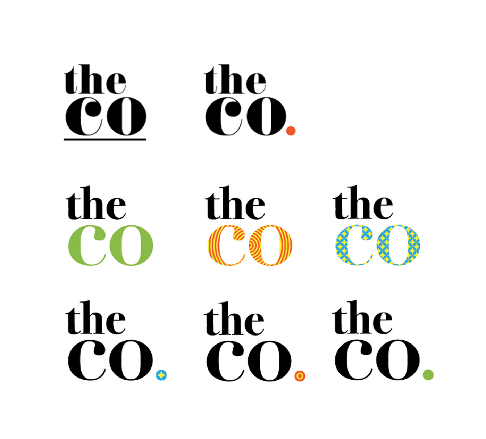

Identity, UI • 2014
One of The Co's co-working space in Duxton, Singapore. Image from The Co.
The Co. is one of South East Asia’s fastest growing entrepreneurial communities. They run a network of co-working spaces in Singapore and Malaysia.
Originally from Singapore, The Co. partnered with VLT Labs to expand into the Malaysian market. VLT Labs was thus given full autonomy over the evolution of The Co's identity. In this project, I drove the envisioning of the new identity and website design to support The Co's expanding portfolio.
In the original brief, The Co. described themselves as 'Community, Concept, Collaboration, Convivial', with an openness to let the community drive their identity. This flexibility whilst core to their identity, introduces a risk of the brand fading as they grow and build bigger, more diverse communities around them.
With an expanding portfolio, there is also a stronger need to consolidate the spaces, and an opportunity for the site to become a central hub for the communities around them.
The Co's original identity
As an exercise, I wanted to see where the exploration might go if I had moved away from the aesthetic of The Co's existing identity and let the core principle of 'openness and friendlines' inform the design.
The outcome was two identities that introduced a new sense of friendliness through colours.
Early identity exploration
Testing the identity on a mock website design.
This design was shared with the team in KL, and our stakeholders in Singapore as part of our weekly catchup. We agreed that the new identity felt more friendly, but we also felt that it had lost the 'neutrality' of the old identity that made them feel more 'open'.
Taking the stakeholders' feedback, I scrutinised the existing identity to understand what worked and didn't work. I continued to develop the design by making small tweaks — introducing a small visual component, adding new colours and applications, and changing to a lighter, more open typography. As a result, the new identity feels more friendly while staying true to the original.
Development of the new identity by small, gradual tweaks
With the new identity set in place, I moved on to work on the website refresh. I worked with our remote stakeholders to identify our two primary personas — new remote workers, and existing members. This informed the direction of the site as a place where our potential and existing customers can explore our spaces and the events around them.
Armed with Balsamiq, we worked through cheap and dirty wireframe mockups and were able to finalise the key pages and contents relatively shortly. The rest was a matter of applying the new brand, building up a simple visual guide and applying them across the site.
The final key pages and contents were finalised in the wireframe
Left: The visual design guide; Right: The visual design applied.